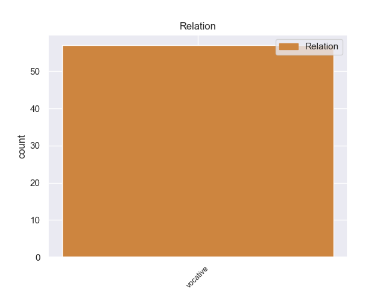
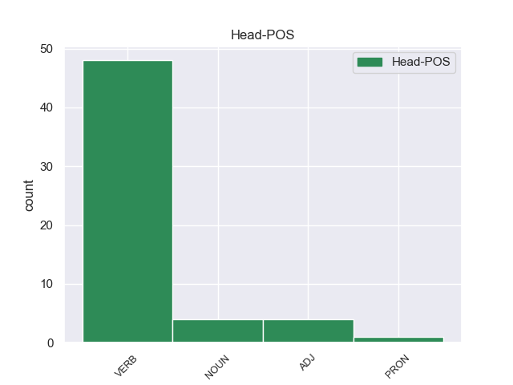
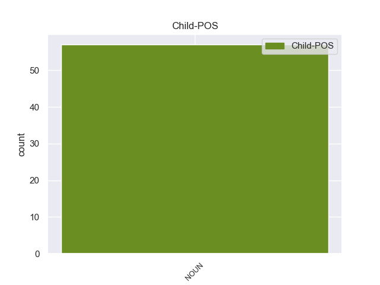

Distribution of features within this leaf



Morphosyntax Rules sorted by frequency.
- When the dependent token is the vocative(vocative) of the head token, and the head token is VERB and the dependent token is NOUN, the Gender needs to be Masc.
1 Κύριε _ _ _ _ 0 _ _ _
2 Πρόεδρε πρόεδρος NOUN NOUN Case=Voc|Gender=Masc|Number=Sing 8 vocative _ SpaceAfter=No
3 , _ _ _ _ 0 _ _ _
4 οι _ _ _ _ 0 _ _ _
5 υπό _ _ _ _ 0 _ _ _
6 συζήτηση _ _ _ _ 0 _ _ _
7 υποθέσεις _ _ _ _ 0 _ _ _
8 αφορούν αφορώ VERB VERB Aspect=Imp|Mood=Ind|Number=Plur|Person=3|Tense=Pres|VerbForm=Fin|Voice=Act 0 _ _ _
9 πολύ _ _ _ _ 0 _ _ _
10 σοβαρές _ _ _ _ 0 _ _ _
11 κατηγορίες _ _ _ _ 0 _ _ _
12 , _ _ _ _ 0 _ _ _
13 οι _ _ _ _ 0 _ _ _
14 οποίες _ _ _ _ 0 _ _ _
15 βαρύνουν _ _ _ _ 0 _ _ _
16 δύο _ _ _ _ 0 _ _ _
17 βουλευτές _ _ _ _ 0 _ _ _
18 του _ _ _ _ 0 _ _ _
19 Σώματος _ _ _ _ 0 _ _ _
20 και _ _ _ _ 0 _ _ _
21 αναφέρονται _ _ _ _ 0 _ _ _
22 σ _ _ _ _ 0 _ _ _
23 την _ _ _ _ 0 _ _ _
24 πρώτη _ _ _ _ 0 _ _ _
25 σελίδα _ _ _ _ 0 _ _ _
26 της _ _ _ _ 0 _ _ _
27 αιτιολογικής _ _ _ _ 0 _ _ _
28 έκθεσης _ _ _ _ 0 _ _ _
29 της _ _ _ _ 0 _ _ _
30 έκθεσής _ _ _ _ 0 _ _ _
31 μου _ _ _ _ 0 _ _ _
32 , _ _ _ _ 0 _ _ _
33 σ _ _ _ _ 0 _ _ _
34 την _ _ _ _ 0 _ _ _
35 οποία _ _ _ _ 0 _ _ _
36 συνιστώ _ _ _ _ 0 _ _ _
37 σ _ _ _ _ 0 _ _ _
38 τους _ _ _ _ 0 _ _ _
39 συναδέλφους _ _ _ _ 0 _ _ _
40 να _ _ _ _ 0 _ _ _
41 ρίξουν _ _ _ _ 0 _ _ _
42 μια _ _ _ _ 0 _ _ _
43 ματιά _ _ _ _ 0 _ _ _
44 . _ _ _ _ 0 _ _ _
1 Κύριε _ _ _ _ 0 _ _ _
2 Πρόεδρε πρόεδρος NOUN NOUN Case=Voc|Gender=Masc|Number=Sing 5 vocative _ SpaceAfter=No
3 , _ _ _ _ 0 _ _ _
4 ήταν _ _ _ _ 0 _ _ _
5 σαφές σαφής ADJ ADJ Case=Nom|Gender=Neut|Number=Sing 0 _ _ _
6 ότι _ _ _ _ 0 _ _ _
7 αυτό _ _ _ _ 0 _ _ _
8 το _ _ _ _ 0 _ _ _
9 πνεύμα _ _ _ _ 0 _ _ _
10 διέπνεε _ _ _ _ 0 _ _ _
11 όσα _ _ _ _ 0 _ _ _
12 είπατε _ _ _ _ 0 _ _ _
13 . _ _ _ _ 0 _ _ _
1 Αξιότιμε _ _ _ _ 0 _ _ _
2 κύριε κύριος NOUN NOUN Case=Voc|Gender=Masc|Number=Sing 3 vocative _ _
3 Πρόεδρε πρόεδρος NOUN NOUN Case=Voc|Gender=Masc|Number=Sing 0 _ _ _
4 , _ _ _ _ 0 _ _ _
5 κυρία _ _ _ _ 0 _ _ _
6 Επίτροπε _ _ _ _ 0 _ _ _
7 , _ _ _ _ 0 _ _ _
8 αξιότιμοι _ _ _ _ 0 _ _ _
9 συνάδελφοι _ _ _ _ 0 _ _ _
10 , _ _ _ _ 0 _ _ _
11 η _ _ _ _ 0 _ _ _
12 ελευθέρωση _ _ _ _ 0 _ _ _
13 των _ _ _ _ 0 _ _ _
14 οδικών _ _ _ _ 0 _ _ _
15 μεταφορών _ _ _ _ 0 _ _ _
16 αναμφίβολα _ _ _ _ 0 _ _ _
17 οδήγησε _ _ _ _ 0 _ _ _
18 σ _ _ _ _ 0 _ _ _
19 το _ _ _ _ 0 _ _ _
20 να _ _ _ _ 0 _ _ _
21 έχουμε _ _ _ _ 0 _ _ _
22 σ _ _ _ _ 0 _ _ _
23 την _ _ _ _ 0 _ _ _
24 Ευρώπη _ _ _ _ 0 _ _ _
25 καλύτερη _ _ _ _ 0 _ _ _
26 προσφορά _ _ _ _ 0 _ _ _
27 και _ _ _ _ 0 _ _ _
28 καλύτερες _ _ _ _ 0 _ _ _
29 τιμές _ _ _ _ 0 _ _ _
30 . _ _ _ _ 0 _ _ _
1 Μία _ _ _ _ 0 _ _ _
2 τελευταία _ _ _ _ 0 _ _ _
3 , _ _ _ _ 0 _ _ _
4 αλλά _ _ _ _ 0 _ _ _
5 σημαντική _ _ _ _ 0 _ _ _
6 παρατήρηση _ _ _ _ 0 _ _ _
7 , _ _ _ _ 0 _ _ _
8 γιατί _ _ _ _ 0 _ _ _
9 τόσο _ _ _ _ 0 _ _ _
10 εσείς εγώ PRON PRON Case=Nom|Gender=Masc|Number=Plur|Person=2|PronType=Prs 0 _ _ _
11 , _ _ _ _ 0 _ _ _
12 κύριε _ _ _ _ 0 _ _ _
13 Πρόεδρε πρόεδρος NOUN NOUN Case=Voc|Gender=Masc|Number=Sing 10 vocative _ SpaceAfter=No
14 , _ _ _ _ 0 _ _ _
15 όσο _ _ _ _ 0 _ _ _
16 και _ _ _ _ 0 _ _ _
17 ο _ _ _ _ 0 _ _ _
18 κ. _ _ _ _ 0 _ _ _
19 Poettering _ _ _ _ 0 _ _ _
20 αναφερθήκατε _ _ _ _ 0 _ _ _
21 σε _ _ _ _ 0 _ _ _
22 αυτό _ _ _ _ 0 _ _ _
23 με _ _ _ _ 0 _ _ _
24 διαφορετικούς _ _ _ _ 0 _ _ _
25 τρόπους _ _ _ _ 0 _ _ _
26 . _ _ _ _ 0 _ _ _
non-conforming Examples:
1 Κυρία _ _ _ _ 0 _ _ _
2 Πρόεδρε πρόεδρος NOUN NOUN Case=Voc|Gender=Fem|Number=Sing 4 vocative _ SpaceAfter=No
3 , _ _ _ _ 0 _ _ _
4 καλωσορίζουμε καλωσορίζω VERB VERB Aspect=Imp|Mood=Ind|Number=Plur|Person=1|Tense=Pres|VerbForm=Fin|Voice=Act 0 _ _ _
5 αυτή _ _ _ _ 0 _ _ _
6 την _ _ _ _ 0 _ _ _
7 πρωτοβουλία _ _ _ _ 0 _ _ _
8 ως _ _ _ _ 0 _ _ _
9 ένα _ _ _ _ 0 _ _ _
10 ακόμα _ _ _ _ 0 _ _ _
11 μικρό _ _ _ _ 0 _ _ _
12 βήμα _ _ _ _ 0 _ _ _
13 σ _ _ _ _ 0 _ _ _
14 την _ _ _ _ 0 _ _ _
15 πορεία _ _ _ _ 0 _ _ _
16 προς _ _ _ _ 0 _ _ _
17 την _ _ _ _ 0 _ _ _
18 εκπλήρωση _ _ _ _ 0 _ _ _
19 της _ _ _ _ 0 _ _ _
20 εντολής _ _ _ _ 0 _ _ _
21 που _ _ _ _ 0 _ _ _
22 λάβαμε _ _ _ _ 0 _ _ _
23 σ _ _ _ _ 0 _ _ _
24 τη _ _ _ _ 0 _ _ _
25 Σύνοδο _ _ _ _ 0 _ _ _
26 του _ _ _ _ 0 _ _ _
27 Τάμπερε _ _ _ _ 0 _ _ _
28 να _ _ _ _ 0 _ _ _
29 καταστήσουμε _ _ _ _ 0 _ _ _
30 την _ _ _ _ 0 _ _ _
31 αρχή _ _ _ _ 0 _ _ _
32 της _ _ _ _ 0 _ _ _
33 αμοιβαίας _ _ _ _ 0 _ _ _
34 αναγνώρισης _ _ _ _ 0 _ _ _
35 ακρογωνιαίο _ _ _ _ 0 _ _ _
36 λίθο _ _ _ _ 0 _ _ _
37 της _ _ _ _ 0 _ _ _
38 δικαστικής _ _ _ _ 0 _ _ _
39 συνεργασίας _ _ _ _ 0 _ _ _
40 . _ _ _ _ 0 _ _ _
1 Και _ _ _ _ 0 _ _ _
2 θα _ _ _ _ 0 _ _ _
3 το _ _ _ _ 0 _ _ _
4 κάνουμε _ _ _ _ 0 _ _ _
5 για _ _ _ _ 0 _ _ _
6 τους _ _ _ _ 0 _ _ _
7 λόγους _ _ _ _ 0 _ _ _
8 που _ _ _ _ 0 _ _ _
9 εξηγήσαμε _ _ _ _ 0 _ _ _
10 , _ _ _ _ 0 _ _ _
11 αλλά _ _ _ _ 0 _ _ _
12 θέλω θέλω VERB VERB Aspect=Imp|Mood=Ind|Number=Sing|Person=1|Tense=Pres|VerbForm=Fin|Voice=Act 0 _ _ _
13 , _ _ _ _ 0 _ _ _
14 κυρίες κυρία NOUN NOUN Case=Voc|Gender=Fem|Number=Plur 12 vocative _ _
15 και _ _ _ _ 0 _ _ _
16 κύριοι _ _ _ _ 0 _ _ _
17 , _ _ _ _ 0 _ _ _
18 να _ _ _ _ 0 _ _ _
19 σας _ _ _ _ 0 _ _ _
20 πω _ _ _ _ 0 _ _ _
21 εδώ _ _ _ _ 0 _ _ _
22 για _ _ _ _ 0 _ _ _
23 ποιο _ _ _ _ 0 _ _ _
24 λόγο _ _ _ _ 0 _ _ _
25 πρόκειται _ _ _ _ 0 _ _ _
26 να _ _ _ _ 0 _ _ _
27 καταψηφίσουμε _ _ _ _ 0 _ _ _
28 τις _ _ _ _ 0 _ _ _
29 τροπολογίες _ _ _ _ 0 _ _ _
30 που _ _ _ _ 0 _ _ _
31 παρουσιάστηκαν _ _ _ _ 0 _ _ _
32 . _ _ _ _ 0 _ _ _
1 Αξιότιμε _ _ _ _ 0 _ _ _
2 κύριε _ _ _ _ 0 _ _ _
3 Επίτροπε επίτροπος NOUN NOUN Case=Voc|Gender=Fem|Number=Sing 8 vocative _ SpaceAfter=No
4 , _ _ _ _ 0 _ _ _
5 αγαπητοί _ _ _ _ 0 _ _ _
6 συνάδελφοι _ _ _ _ 0 _ _ _
7 , _ _ _ _ 0 _ _ _
8 θέλω θέλω VERB VERB Aspect=Imp|Mood=Ind|Number=Sing|Person=1|Tense=Pres|VerbForm=Fin|Voice=Act 0 _ _ _
9 κι _ _ _ _ 0 _ _ _
10 εγώ _ _ _ _ 0 _ _ _
11 αρχικά _ _ _ _ 0 _ _ _
12 να _ _ _ _ 0 _ _ _
13 ευχαριστήσω _ _ _ _ 0 _ _ _
14 τον _ _ _ _ 0 _ _ _
15 εισηγητή _ _ _ _ 0 _ _ _
16 εξ _ _ _ _ 0 _ _ _
17 ονόματος _ _ _ _ 0 _ _ _
18 της _ _ _ _ 0 _ _ _
19 Ομάδας _ _ _ _ 0 _ _ _
20 μου _ _ _ _ 0 _ _ _
21 , _ _ _ _ 0 _ _ _
22 επίσης _ _ _ _ 0 _ _ _
23 δε _ _ _ _ 0 _ _ _
24 να _ _ _ _ 0 _ _ _
25 ευχαριστήσω _ _ _ _ 0 _ _ _
26 τόσο _ _ _ _ 0 _ _ _
27 εκείνον _ _ _ _ 0 _ _ _
28 όσο _ _ _ _ 0 _ _ _
29 και _ _ _ _ 0 _ _ _
30 όλους _ _ _ _ 0 _ _ _
31 τους _ _ _ _ 0 _ _ _
32 συντάκτες _ _ _ _ 0 _ _ _
33 γνωμοδοτήσεων _ _ _ _ 0 _ _ _
34 των _ _ _ _ 0 _ _ _
35 επιτροπών _ _ _ _ 0 _ _ _
36 επειδή _ _ _ _ 0 _ _ _
37 είχαν _ _ _ _ 0 _ _ _
38 να _ _ _ _ 0 _ _ _
39 αντιμετωπίσουν _ _ _ _ 0 _ _ _
40 έναν _ _ _ _ 0 _ _ _
41 τεράστιο _ _ _ _ 0 _ _ _
42 όγκο _ _ _ _ 0 _ _ _
43 εργασίας _ _ _ _ 0 _ _ _
44 για _ _ _ _ 0 _ _ _
45 τη _ _ _ _ 0 _ _ _
46 συγκεκριμένη _ _ _ _ 0 _ _ _
47 έκθεση _ _ _ _ 0 _ _ _
48 . _ _ _ _ 0 _ _ _
1 Πρέπει _ _ _ _ 0 _ _ _
2 να _ _ _ _ 0 _ _ _
3 το _ _ _ _ 0 _ _ _
4 αναγνωρίσουμε _ _ _ _ 0 _ _ _
5 αυτό _ _ _ _ 0 _ _ _
6 , _ _ _ _ 0 _ _ _
7 διότι _ _ _ _ 0 _ _ _
8 πάντα _ _ _ _ 0 _ _ _
9 κατακρίνουμε _ _ _ _ 0 _ _ _
10 την _ _ _ _ 0 _ _ _
11 απόστασή _ _ _ _ 0 _ _ _
12 μας _ _ _ _ 0 _ _ _
13 από _ _ _ _ 0 _ _ _
14 τους _ _ _ _ 0 _ _ _
15 πολίτες _ _ _ _ 0 _ _ _
16 , _ _ _ _ 0 _ _ _
17 και _ _ _ _ 0 _ _ _
18 σ' _ _ _ _ 0 _ _ _
19 αυτή _ _ _ _ 0 _ _ _
20 την _ _ _ _ 0 _ _ _
21 περίπτωση _ _ _ _ 0 _ _ _
22 , _ _ _ _ 0 _ _ _
23 κυρίες κυρία NOUN NOUN Case=Voc|Gender=Fem|Number=Plur 32 vocative _ _
24 και _ _ _ _ 0 _ _ _
25 κύριοι _ _ _ _ 0 _ _ _
26 , _ _ _ _ 0 _ _ _
27 την _ _ _ _ 0 _ _ _
28 πρώτη _ _ _ _ 0 _ _ _
29 Ιανουαρίου _ _ _ _ 0 _ _ _
30 εκείνοι _ _ _ _ 0 _ _ _
31 μας _ _ _ _ 0 _ _ _
32 προσπέρασαν προσπερνώ VERB VERB Aspect=Perf|Mood=Ind|Number=Plur|Person=3|Tense=Past|VerbForm=Fin|Voice=Act 0 _ _ _
33 . _ _ _ _ 0 _ _ _
1 Διότι _ _ _ _ 0 _ _ _
2 τόσο _ _ _ _ 0 _ _ _
3 το _ _ _ _ 0 _ _ _
4 ευρώ ευρώ NOUN NOUN Case=Nom|Gender=Neut|Number=Sing 0 _ _ _
5 , _ _ _ _ 0 _ _ _
6 κυρίες κυρία NOUN NOUN Case=Voc|Gender=Fem|Number=Plur 4 vocative _ _
7 και _ _ _ _ 0 _ _ _
8 κύριοι _ _ _ _ 0 _ _ _
9 , _ _ _ _ 0 _ _ _
10 όσο _ _ _ _ 0 _ _ _
11 και _ _ _ _ 0 _ _ _
12 η _ _ _ _ 0 _ _ _
13 Οικονομική _ _ _ _ 0 _ _ _
14 και _ _ _ _ 0 _ _ _
15 Νομισματική _ _ _ _ 0 _ _ _
16 Ένωση _ _ _ _ 0 _ _ _
17 γεννήθηκαν _ _ _ _ 0 _ _ _
18 σ _ _ _ _ 0 _ _ _
19 την _ _ _ _ 0 _ _ _
20 Μαδρίτη _ _ _ _ 0 _ _ _
21 . _ _ _ _ 0 _ _ _